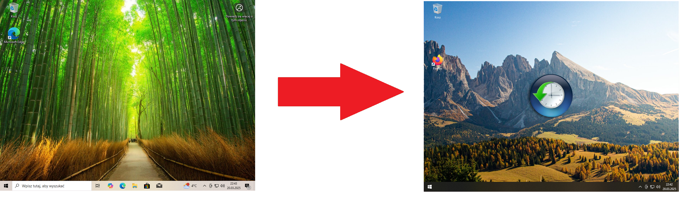

Relive Debloat to narzędzie do usuwania zbędnych aplikacji i funkcji z Windows 10 i 11, poprawiające wydajność systemu. Umożliwia wyłączanie telemetrii, usuwanie preinstalowanych programów oraz personalizację systemu. Przyjazne dla laików – 2 kliknięcia i gotowe!
Autor tapety: Obraz autorstwa wirestock na Freepik
Chris Titus Tech za CCT WinUtil
ShadowWhisperer za Remove-MS-Edge